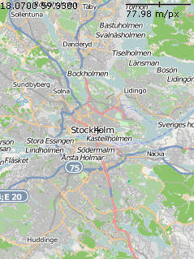
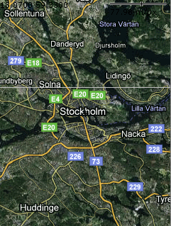

HelloMap is a simple application that displays a slippy (i.e. panning) map.

This example is included in the MoSync SDK installation in the /examples folder. For information on importing the examples into your workspace, see Importing the Examples.
When started, the application displays a map centered on Stockholm (longitude/latitude 18.07, 59.33) with a medium level of magnification. The initial map source is OpenStreetMap. This application uses the Moblet framework.
Use finger/pointer/stylus.